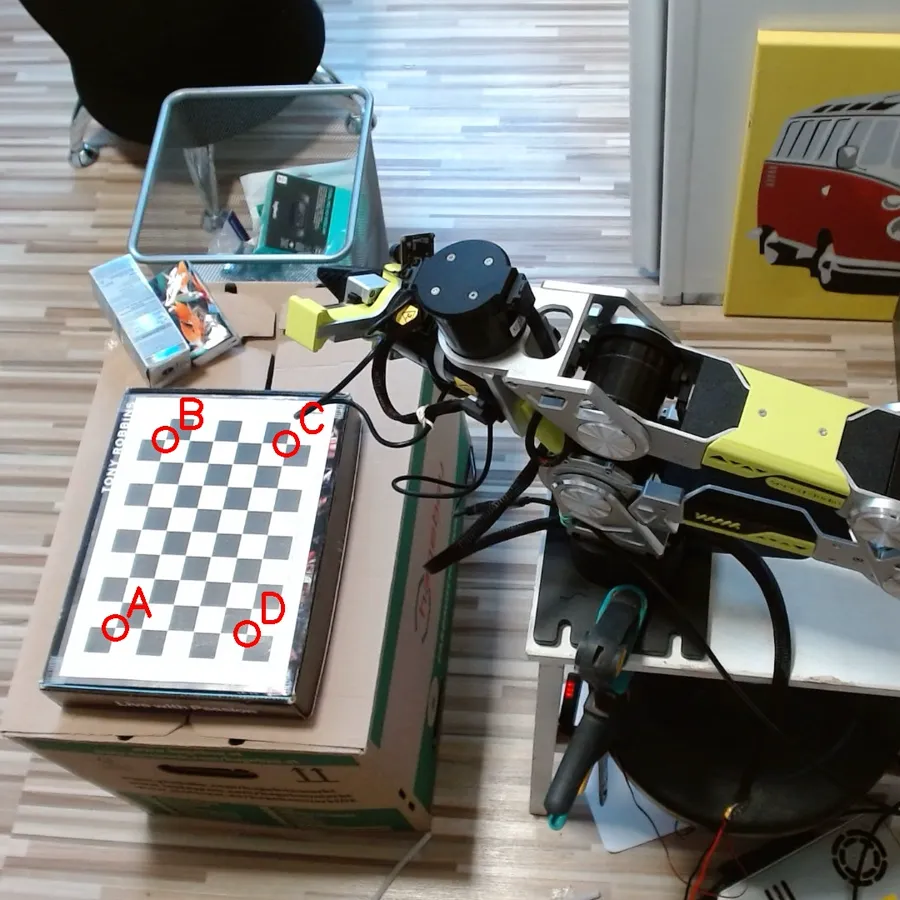

Ein Bau-Logbuch
Humanoid-Logbuch
Wir bringen einem Roboterarm bei, Aufgaben nicht nur auszuführen, sondern zu lernen: Seeed reBot B601-RS, LeRobot, Teleoperation per Leader-Arm, Demonstrationen aufnehmen und lokal auf dem Mac mini trainieren. Dieses Logbuch hält jeden Arbeitstag fest – mit Denkweise, Wins, Fails und Learnings –, damit du es nachbauen kannst.

Stand des Projekts
- PhaseKamera-Kalibrierung
- ArmreBot B601-RS + reBot 102 (Leader)
- SoftwareLeRobot 0.7.x, Teleop-App 3.8
- Training1 ACT-Lauf, am Arm ungetestet
- Codenoch nicht veröffentlicht
- Einträge3
- Letzter Eintrag21.11.2026
Fortschritt 57 %
- ✓LeRobot + Seeed-Plugin installiert
- ✓Teleoperation Leader → Follower läuft
- ✓Demonstrationen aufgenommen (erste 5 saubere Demos)
- ✓Erste ACT-Policy trainiert
- Policy am echten Arm getestet
- Kamera–Tisch–Roboter-Kalibrierung (in Arbeit)
- Greifen per Textbefehl
Zeitleiste
Kapitel
- Tag 1Vom ersten Teleop-Skript zum KollisionsschutzSonntag, 15. November 2026 · 2 Min.Auf dem Mac mini läuft die Teleoperation – und wir lernen, warum ein Roboterarm einen Kollisionsschutz braucht.
- Tag 2Die Nacht danach – das erste TrainingMontag, 16. November 2026 · 1 Min.Während wir schlafen, trainiert der Mac mini die erste ACT-Policy. Ob sie am Arm taugt, wissen wir noch nicht.
- Tag 3Umzug auf den Roboter-Laptop und der Plan-Wechsel bei der KalibrierungSamstag, 21. November 2026 · 3 Min.Neuer Laptop, App 3.8, YOLO-World – und eine manuelle Kalibrierung, die scheitert und uns zu ChArUco bringt.